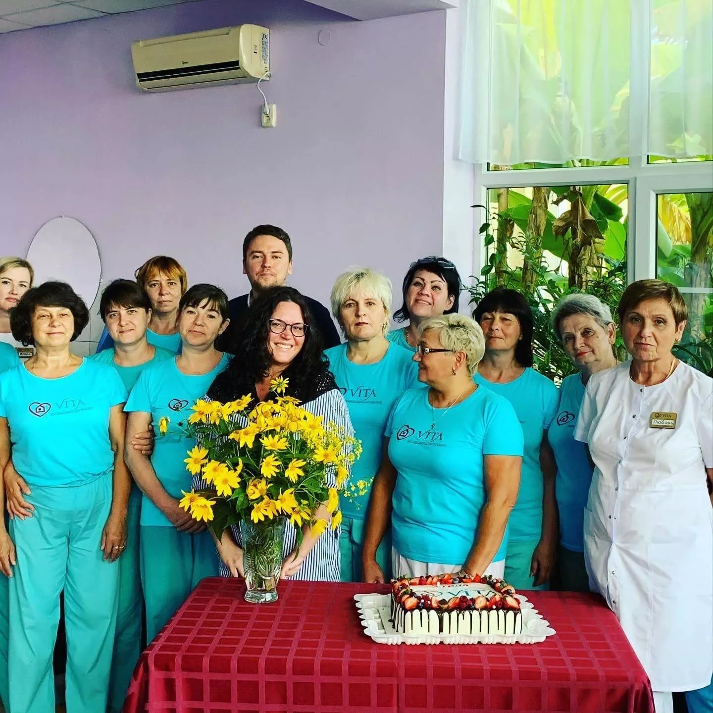
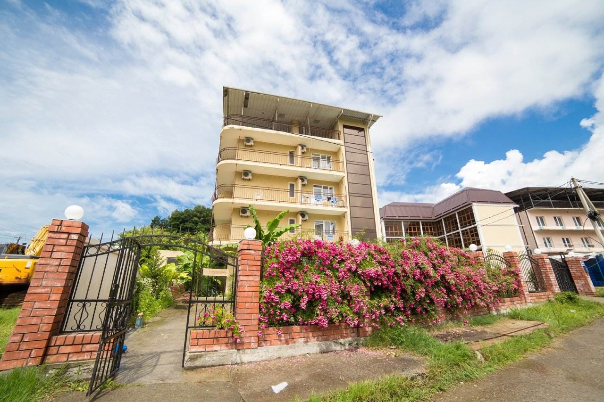
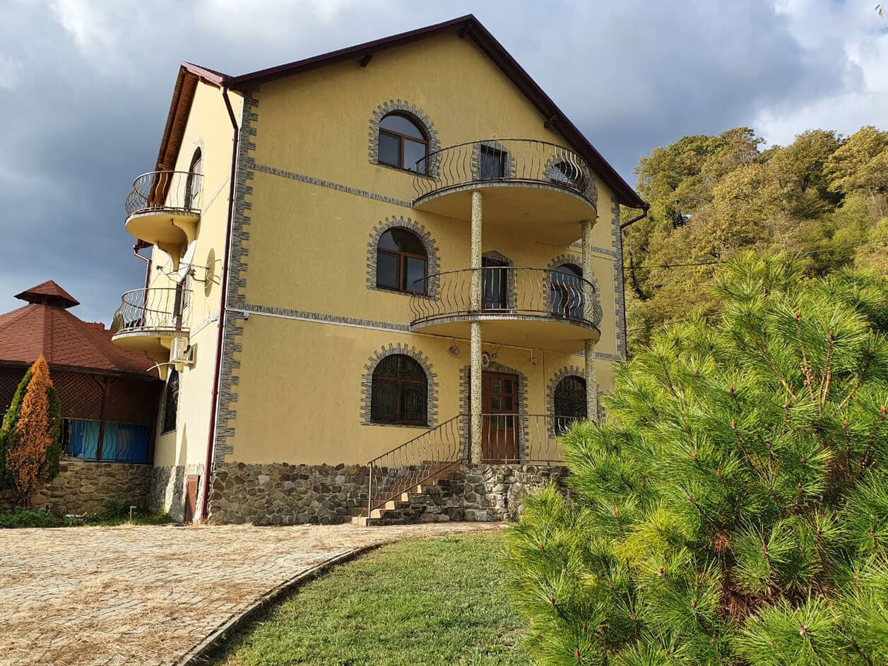

Самостоятельные пожилые люди
Человек ходит, ест и умывается сам, но подолгу остаётся один. Важны режим, регулярная еда, общение и спокойный присмотр.
Частный дом престарелых «Вита» — круглосуточный уход, помощь в быту, питание и контроль назначенных лекарств.
Проживание — от 1 900 ₽/сутки. Условия и объём помощи подбираются с учётом состояния пожилого человека.

В «Вите» принимают людей с разным уровнем самостоятельности: от тех, кто ходит сам, до лежачих пожилых. Уход подбирают по состоянию, а не по формальному диагнозу.
Человек ходит, ест и умывается сам, но подолгу остаётся один. Важны режим, регулярная еда, общение и спокойный присмотр.
Если человек передвигается с тростью, ходунками или в коляске, ему нужна помощь при подъёме, посещении санузла и прогулках.
При необходимости ставят функциональную кровать, противопролежневый матрас и биотуалет. Персонал помогает с кормлением, гигиеной и сменой положения тела.
Помогаем соблюдать режим после выписки: питание, гигиена, передвижение, контроль самочувствия и занятия по рекомендациям врача. Это уход и сопровождение, а не лечение.
При нарушениях памяти важны закрытая территория, постоянное наблюдение и предсказуемый распорядок дня.
На время отпуска семьи, командировки или периода после выписки. Договор заключают на короткий срок, уход при этом остаётся полным.
Подберем вариант проживания под ваши задачи и бюджет.
Цена зависит от уровня ухода, типа размещения и срока проживания.
Самостоятельные пожилые
Нужна помощь в быту
Лежачие, деменция, после инсульта
На отпуск, после больницы
Сеть частных пансионатов — единые стандарты во всех домах
В Сочи работают два филиала — «Гармония» и «Пластунка». Компания имеет медицинскую лицензию и работает в соответствии с ГОСТ 52884-2007.


Пансионаты работают от имени ООО «Гармония-Д». На сайте можно ознакомиться с реквизитами организации, медицинской лицензией № ЛО-23-01-002001 от 5 марта 2010 года и сведениями о соответствии ГОСТ 52884-2007. Состав помощи, стоимость проживания и порядок оплаты заранее согласовываем с семьёй и фиксируем в договоре.
Комфортный режим, полноценное питание, общение и посильная активность помогают сделать каждый день понятным и спокойным.
Перенести готовый блок без изменений со старой версии страницы: без заголовка - вставить в данный блок.
Фотогалерею перенести готовым блоком без изменений со старой версии страницы: без заголовка - вставить в данный блок.


Кто ухаживает за вашим близким
Комфортный режим, полноценное питание, общение и посильная активность помогают сделать каждый день понятным и спокойным.
Рядом с постояльцами каждый день находятся сиделки, медсестра и управляющая. Смены выстроены так, чтобы ночью человек тоже мог получить помощь: сиделка обходит комнаты, реагирует на кнопку вызова и помогает дойти до санузла.
Наблюдение в «Вите» — это конкретные действия по расписанию, а не просто присутствие персонала в здании. Сиделки дежурят круглосуточно под контролем медсестры и управляющей. Пансионат не заменяет больницу: сотрудники выполняют назначения врача, отслеживают состояние и вовремя зовут специалиста.
Медсестра приглашает терапевта, если давление или температура вышли за привычные границы, появились боль, отёк, одышка, спутанность или новая рана.
При остром состоянии сотрудники вызывают скорую помощь, сопровождают человека при госпитализации и сразу сообщают семье.
Родные могут позвонить управляющей, приехать в дом или выйти на видеосвязь с близким.
Об изменениях состояния, вызове врача и госпитализации семье сообщают в тот же день.
Оформление обычно занимает несколько дней. Чтобы семье было спокойнее, весь путь делят на понятные шаги: от первого звонка до заезда и адаптации.
Менеджер уточняет состояние, самостоятельность, лекарства и необходимый объём помощи.
Подбирают комнату и уровень ухода, рассчитывают стоимость. При желании можно приехать на экскурсию.
В договоре фиксируют услуги и стоимость. Семья передаёт необходимые документы и медицинские сведения.
При необходимости организуют транспортировку. Постояльца размещают в комнате и знакомят с персоналом.
В первые дни помогают привыкнуть к распорядку, соседям и новому месту, внимательно следят за самочувствием и настроением.
Пакет документов короткий: паспорта, полис, СНИЛС и медицинские сведения о состоянии человека. Часть бумаг можно донести после заезда, если семья торопится из-за выписки из больницы.
Точный перечень зависит от состояния человека — его уточнит администратор. Оригиналы нужны при подписании
договора, копии сотрудники снимают на месте. Одежду лучше подписать, чтобы вещи не терялись в общей
прачечной.
Если что-то забыли — можно привезти в любой день или попросить наших сотрудников купить.
Полный порядок
оформления →
Истории семей, которые доверили нам своих близких
Сотрудники помогают в бытовых делах, следят за распорядком дня и поддерживают доброжелательную атмосферу. Родственники могут оставаться на связи и навещать близкого.
Место можно проверить до заселения. Достаточно одного визита и подробного разговора с управляющей: документы, реальные условия и понятные ответы говорят о работе пансионата больше, чем рекламные обещания.
В быту слова «дом престарелых», «пансионат для престарелых» и «интернат» часто используют как синонимы. Для семьи важна форма организации: государственные учреждения принимают по направлению, а «Вита» работает по договору с семьёй.
| Критерий | «Вита» | Государственный дом-интернат для пожилых | Сиделка на дому |
|---|---|---|---|
| Срок оформления | Несколько дней после консультации и договора | Постановка в очередь, ожидание месяцами | Зависит от агентства |
| Основание | Договор с семьёй, стоимость зафиксирована | Административный порядок, направление органов соцзащиты | Договор с исполнителем |
| Проживание | Комната, питание, безбарьерная среда, прачечная | Организованное проживание в учреждении | Дома у пожилого человека |
| Круглосуточный уход | Смены персонала днём и ночью | Зависит от учреждения | По графику одного человека |
| Социализация | Занятия, прогулки, общение с ровесниками | Есть, формат зависит от учреждения | Ограничена кругом семьи |
| Посещения родных | Свободные визиты и видеосвязь | По правилам учреждения | Без ограничений |
| Стоимость | Оплата по договору, от 1 900 ₽/сутки | Удержание части пенсии | Ставка плюс бытовые расходы |
Начните с документов: юридическое лицо, ОГРН и ИНН, медицинская лицензия, договор с составом услуг и стоимостью. Затем посмотрите здание вживую: комнаты, санузлы, столовую, поручни и пандусы, кнопки вызова, пути эвакуации и огнетушители.
Насторожитесь, если предоплату просят до договора, комнаты отказываются показывать, а вместо реальных условий обещают вылечить деменцию или гарантированно поставить человека на ноги. Давление на решение и цена заметно ниже рынка без объяснения состава услуги — дополнительные поводы всё проверить.
В Сочи словом «пансионат» называют и курортные отели, и санатории. Дом для пожилых — другой формат услуги: сюда переезжают не за путёвкой, а ради ежедневного ухода, питания, наблюдения и помощи в быту.
| Критерий | Проживание с уходом «Вита» | Санаторий | Курортный пансионат, отель |
|---|---|---|---|
| Зачем едут | Проживание с уходом и наблюдением | Курс процедур по путёвке | Отдых у моря |
| Уход | Помощь с гигиеной, кормлением, передвижением | Не предусмотрен | Не предусмотрен |
| Питание | Шесть приёмов, помощь при кормлении | По столу санатория | Ресторан или шведский стол |
| Наблюдение | Ежедневный контроль показателей и лекарств | Врачебный приём в рамках курса | Отсутствует |
| Приём маломобильных | Принимают, включая лежачих | По ограничениям путёвки | Обычно отказывают |
| Срок | От нескольких дней до постоянного проживания | Обычно 10–21 день | Срок брони |
| Связь с семьёй | Отчёты управляющей, визиты, видеосвязь | Не организована | Не организована |
От 1 900 ₽/сутки для самостоятельных постояльцев, от 2 200 ₽ — при ограниченных возможностях, от 2 500 ₽ — для лежачих. Стоимость зависит от объёма помощи, комнаты и срока проживания.
Проживание, 6-разовое питание, гигиенический уход, наблюдение, выдача препаратов по назначениям врача, прогулки, уборка, смена белья и стирка. Медикаменты, трансфер, профильные врачи и анализы оплачиваются отдельно.
В разговорной речи эти названия часто используют как синонимы. Важно смотреть не на название, а на формат работы, условия проживания, состав услуг и порядок оформления.
В государственный интернат направляют через органы социальной защиты, а оформление может занять время. В частном пансионате проживание оформляют по договору с семьёй, условия можно посмотреть заранее, а стоимость фиксируют письменно.
Да. В пансионатах есть пандусы, лифт, поручни, широкие проходы и кнопки вызова. Объём помощи подбирают с учётом самостоятельности и состояния человека.
Да. Перевозку из дома или больницы организуют по запросу, в том числе для маломобильных и лежачих постояльцев. Услуга оплачивается отдельно.
В санаторий обычно приезжают на ограниченный курс процедур и в основном обслуживают себя самостоятельно. В «Вите» пожилой человек живёт с ежедневной помощью, питанием и наблюдением — от нескольких дней до постоянного проживания.
Доступны личные визиты, телефонные звонки и видеосвязь. При важных изменениях состояния управляющая связывается с семьёй.
Расскажем об условиях проживания, покажем пансионат и поможем подобрать подходящий вариант ухода.